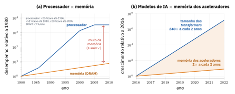
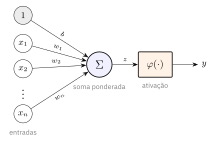
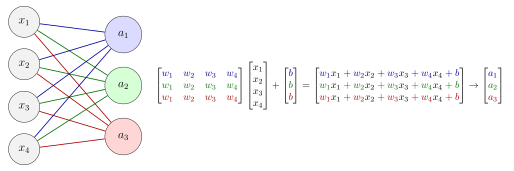
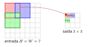
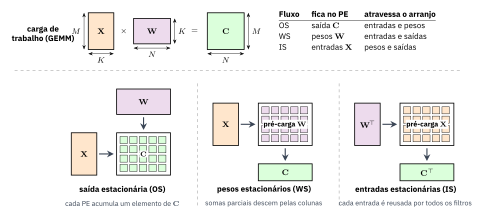
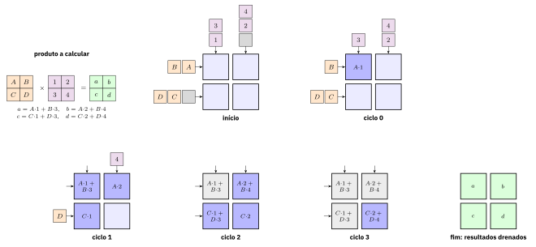

Fundamentos¶
Este capítulo reúne a base teórica do restante da documentação: por que aceleradores dedicados se tornaram necessários, o que uma rede neural calcula, como esse cálculo é convertido para inteiros de 8 bits e como um arranjo sistólico o executa.
Por que aceleradores dedicados¶
Durante décadas, o desempenho dos processadores cresceu pela elevação da frequência e pela exploração do paralelismo em nível de instrução. Com o fim do escalonamento de Dennard, por volta de 2005, a densidade de potência deixou de permitir esse ritmo: o ganho anual caiu de cerca de 52% na era RISC para poucos pontos percentuais. A inovação migrou, então, para o co-projeto de hardware e software, com arquiteturas específicas de domínio (DSAs), como as NPUs, que exploram o paralelismo de dados, gerenciam explicitamente a memória e operam com precisão reduzida.

O muro da memória¶
O principal desafio no projeto de uma NPU não está no custo das operações aritméticas, mas no tempo e na energia gastos para mover os dados entre a memória e as unidades de cálculo. O desempenho dos processadores cresceu muito mais depressa que o da memória, e a distância entre os dois, o memory wall, só aumentou. Nas redes neurais modernas, o fenômeno se repete em outra escala: o tamanho dos modelos cresce duas ordens de grandeza mais depressa que a memória dos aceleradores.

Num processador de uso geral, cada multiplicação e acumulação (MAC) exige buscar dois operandos e guardar o resultado, e o barramento entre a memória e a unidade de cálculo, o gargalo de Von Neumann, limita o desempenho mais do que a própria aritmética. Um acelerador eficiente, portanto, precisa reaproveitar cada dado lido o máximo possível antes de descartá-lo.
Redes neurais¶
O neurônio artificial¶
O neurônio artificial faz uma soma ponderada das entradas, soma um viés e aplica uma função de ativação \(\varphi\):

Funções de ativação¶
A ativação é o que torna a rede capaz de aprender relações não lineares: sem ela, várias camadas seguidas equivaleriam a uma só. As funções clássicas, sigmoide e tangente hiperbólica, ficam praticamente planas para entradas grandes, o que torna o treino lento. A ReLU, \(\mathrm{ReLU}(z)=\max(0,z)\), apenas zera os valores negativos. É simples de treinar e, em hardware, custa só um teste de sinal; por isso é a ativação implementada na NPU.
Camada densa¶
Uma camada densa reúne \(m\) neurônios que recebem a mesma entrada, o que se escreve \(\mathbf z=\mathbf W\mathbf x+\mathbf b\); ela custa \(m\cdot n\) MACs. Empilhando camadas densas e ativações, obtém-se o perceptron multicamadas (MLP). Para um lote de entradas, as colunas de \(\mathbf x\) viram uma matriz, e a camada inteira é uma multiplicação geral de matrizes (GEMM): é essa a operação que o arranjo sistólico acelera.

Convolução¶
Em uma imagem, ligar cada pixel a cada neurônio desperdiça parâmetros e ignora que pixels vizinhos estão relacionados. Uma rede convolucional (CNN) usa, em vez disso, filtros pequenos, de \(k\times k\) pesos, que deslizam sobre a imagem: cada saída é a soma ponderada de uma janela, e o mesmo filtro é reaproveitado em todas as posições. O passo \(s\) é o salto entre uma janela e a seguinte. Para o filtro \(c\), a saída na posição \((u,v)\) é
e uma imagem \(H\times H\) produz uma saída de lado \(\lfloor (H-k)/s\rfloor+1\). Na CNN do estudo de caso, com \(H=28\), \(k=3\) e \(s=2\), os mapas têm \(13\times13\) posições. Os quatro filtros usam apenas 36 pesos, enquanto uma camada densa com as mesmas dimensões (\(784\to676\)) usaria 529.984. A rigor, essa operação é uma correlação cruzada, pois a convolução matemática espelharia o filtro, mas os frameworks mantêm o nome por tradição, e a diferença é irrelevante quando os filtros são aprendidos.

Treinamento¶
A rede termina com um número por classe, os logits; o maior indica a classe prevista. Para treinar, a função softmax transforma os logits em probabilidades, \(p_i=e^{z_i}/\sum_j e^{z_j}\), e a perda de entropia cruzada, \(\mathcal L=-\log p_y\), mede o quanto a rede acreditou na classe correta \(y\). A perda é zero se \(p_y=1\), vale 0,69 se \(p_y=0{,}5\) e sobe para 4,6 se \(p_y=0{,}01\): ela pune fortemente os erros cometidos com confiança. A retropropagação calcula, pela regra da cadeia, quanto cada peso contribuiu para a perda, e o otimizador Adam ajusta os pesos na direção que a reduz. Na inferência, a softmax é dispensável, pois não muda qual logit é o maior; por isso a NPU só executa a inferência, e o treino é feito no computador hospedeiro.
Quantização para inteiros¶
Para rodar na NPU, pesos e ativações precisam ser convertidos em inteiros de 8 bits (INT8), que vão de \(-128\) a 127. A conversão é simples: multiplica-se cada número real por um fator, a escala, e arredonda-se o resultado. Com escala 100, por exemplo, o peso 0,237 vira o inteiro 24. A escala deve ser a maior possível, para que valores próximos continuem distinguíveis, mas sem que nenhum resultado ultrapasse 127; o que passa disso é saturado, isto é, trocado pelo extremo da faixa.
Cada camada da NPU segue o mesmo roteiro: multiplica e soma os inteiros em 32 bits, o que evita estouros durante a conta, e, ao final, a unidade de pós-processamento reduz cada resultado a 8 bits, multiplicando-o por um fator \(M\) e dividindo-o por \(2^S\). Com o divisor assim definido, o que resta ao software é escolher a escala dos pesos de cada camada de modo que, depois da divisão, os resultados caibam em 8 bits: a maior escala que respeite duas condições, a de que o maior peso, em módulo, vire no máximo 127, e a de que o maior resultado observado em algumas imagens de treino (a calibração) vire no máximo 120, deixando uma folga para imagens novas. Os vieses são convertidos com a mesma escala do acumulador ao qual são somados.
As escalas se encadeiam ao longo da rede: cada ativação inteira equivale à ativação real multiplicada por um fator conhecido, e cada logit inteiro é aproximadamente o logit real multiplicado por uma mesma constante positiva \(\alpha\). Como multiplicar todos os logits pelo mesmo fator positivo não altera qual deles é o maior, a rede quantizada escolhe a mesma classe que a original; os arredondamentos só podem mudar a decisão quando os dois maiores logits estão quase empatados.
Por que 8 bits
Um peso INT8 ocupa um quarto da memória de um FP32 e é movido quatro vezes mais rápido pelo mesmo barramento; o multiplicador \(8\times8\) também é muito menor que um de ponto flutuante. Na CNN do estudo de caso, os 6.810 parâmetros ocupam cerca de 6,7 KB em INT8, e não 27 KB em FP32, e a quantização custou 0,13 ponto percentual de acurácia.
Arranjos sistólicos¶
A organização clássica para acelerar o produto de matrizes, usada na TPU do Google, é o arranjo sistólico: uma grade de elementos de processamento (PEs) idênticos, cada um com um multiplicador, um somador e um acumulador, que se comunicam apenas com os vizinhos. Os dados pulsam pela grade a cada ciclo, como numa linha de montagem; o nome vem desse ritmo regular, como o batimento cardíaco. Assim, um valor lido uma vez da memória é usado por uma linha ou coluna inteira de PEs.
Reuso de dados
Num arranjo \(4\times4\), cada ativação lida da memória é usada por 4 PEs, e cada peso, por outros 4. Para a mesma quantidade de MACs, o tráfego com a memória cai na mesma proporção, o que alivia o barramento do SoC.
Fluxos de dados¶
Os fluxos de dados (dataflows) se distinguem pelo operando que permanece parado em cada PE:
- Weight Stationary (pesos estacionários): os pesos ficam fixos nos PEs; as ativações fluem por uma direção e as somas parciais, pela outra. Maximiza o reuso dos pesos.
- Output Stationary (saídas estacionárias): cada PE acumula localmente um resultado do começo ao fim, enquanto entradas e pesos atravessam a grade. Elimina o tráfego de somas parciais e é natural para GEMM.
- Input Stationary (entradas estacionárias): as ativações ficam nos PEs, e pesos e somas parciais fluem. Maximiza o reuso das entradas.
- Abordagens híbridas: combinam as anteriores, adaptando-se às dimensões de cada camada (por exemplo, o row stationary da Eyeriss).

Esta NPU adota o fluxo Output Stationary: as somas parciais ficam nos acumuladores de 32 bits dos PEs até o fim do cálculo, e só os resultados finais saem do arranjo. Na camada densa, ela usa uma variação desse fluxo, o modo GEMV.

Multiplexação no tempo e tiling¶
Um arranjo real não tem PEs suficientes para calcular uma camada inteira de uma vez: seu tamanho é limitado por área, consumo e interconexão. As matrizes grandes são divididas em blocos (tiles) do tamanho do arranjo, processados em sequência pelos mesmos PEs. A arquitetura troca paralelismo espacial por paralelismo temporal: um conjunto finito de recursos é reutilizado ao longo de vários ciclos, à custa de um aumento controlado na latência. Memórias locais e filas desacoplam o arranjo do restante do sistema e o mantêm alimentado com um dado novo por ciclo.
Como cada resultado se forma aos poucos, um produto por ciclo, cada PE combina um multiplicador, um somador e um registrador de acumulação, a unidade MAC:
mapeada em FPGAs nos blocos DSP dedicados. O PE também precisa zerar o acumulador entre um tile e o seguinte e entregar o resultado ao fim do cálculo; o núcleo de cálculo descreve como isso é feito nesta NPU.
Referências¶
- GHOLAMI, Amir et al. AI and memory wall. IEEE Micro, v. 44, n. 3, p. 33–39, 2024.
- GOODFELLOW, Ian; BENGIO, Yoshua; COURVILLE, Aaron. Deep learning. MIT Press, 2016.
- HENNESSY, John L.; PATTERSON, David A. Computer architecture: a quantitative approach. 5. ed. Elsevier, 2012.
- JACOB, Benoit et al. Quantization and training of neural networks for efficient integer-arithmetic-only inference. In: CVPR, 2018.
- JOUPPI, Norman P. et al. In-datacenter performance analysis of a tensor processing unit. In: ISCA, 2017.
- KUNG, H. T. Why systolic architectures? Computer, v. 15, n. 1, p. 37–46, 1982.
- NAIR, Vinod; HINTON, Geoffrey E. Rectified linear units improve restricted Boltzmann machines. In: ICML, 2010.
- SZE, Vivienne et al. Efficient processing of deep neural networks: a tutorial and survey. Proceedings of the IEEE, v. 105, n. 12, p. 2295–2329, 2017.